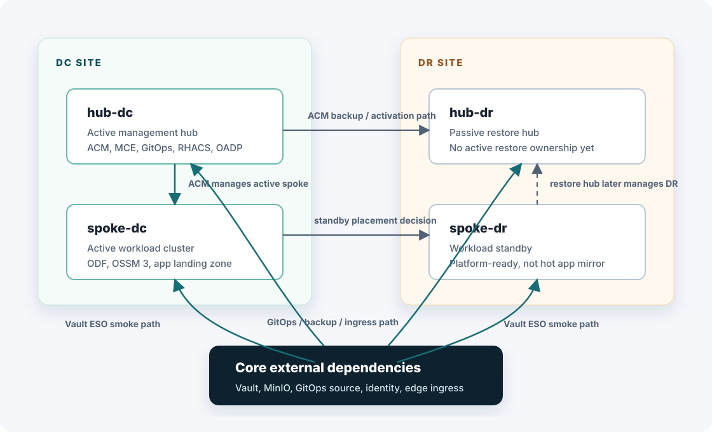

Diagram
Fleet topology and shared services
Current OCP management and workload placement, including the RKE2 shared-service dependency path for Vault, Kafka, MinIO, GitLab, and the edge HAProxy.

Source
Mermaid source
Use this source when copying the topology into tools that render Mermaid diagrams.
flowchart LR
subgraph DC["DC site"]
HDC["hub-dc<br/>active management hub"]
SDC["spoke-dc<br/>active workload cluster"]
end
subgraph DR["DR site"]
HDR["hub-dr<br/>passive restore hub"]
SDR["spoke-dr<br/>workload standby"]
end
RKE2["RKE2 shared services<br/>Vault, Kafka, MinIO, GitLab, HAProxy edge"]
HDC -- "ACM manages active spoke" --> SDC
HDC -. "ACM backup and activation path" .-> HDR
SDC -. "standby placement decision" .-> SDR
HDR -. "restore hub later manages DR" .-> SDR
RKE2 -- "Vault ESO smoke path" --> HDC
RKE2 -- "Vault ESO smoke path" --> HDR
RKE2 -- "Vault and future Kafka dependency" --> SDC
RKE2 -- "Vault ESO smoke path" --> SDR